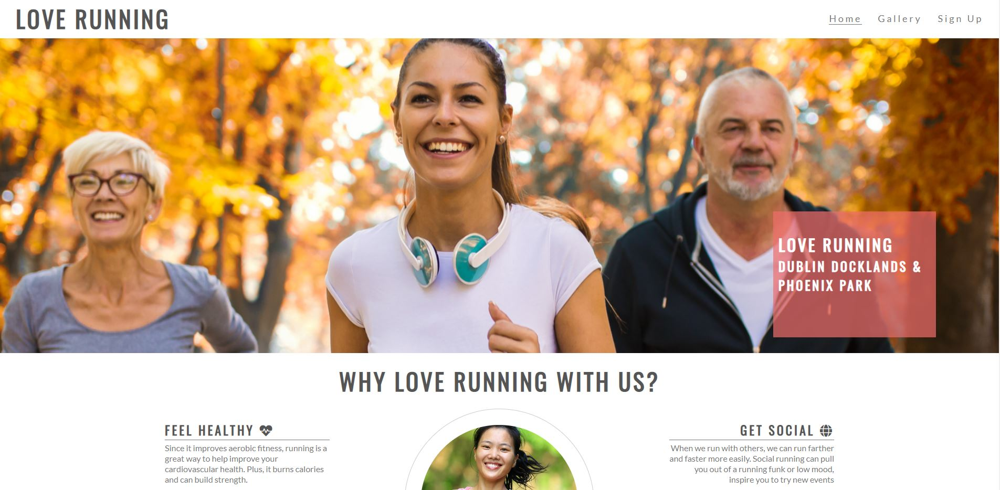

Albert Sam's Project
Projects
HTML&CSS project
This project was a demonstration pf how to use html and CSS to create....
 Github PageUCD Project
A project to display of a using centered development methdology by creating a resume for myself with the use of bootstrap.
 Github Page
Github Page